01 / 10 · Imaging & capture
The imaging gallery
Imaging
Choose a patient and see every X-ray, photo, scan and model on file as a tile with its type, tooth, labels and date.
- Filter by type and by the practice's own colour-coded labels.
- An annotated image is marked on its tile.
- Multi-View shows every image, or every matching one, as a scrollable grid.
- Print Gallery makes a PDF contact sheet.
- With the Ceph add-on, Ceph Tracing goes straight to the patient's lateral ceph.
- Import CBCT and Import 3D Model sit on the same toolbar.
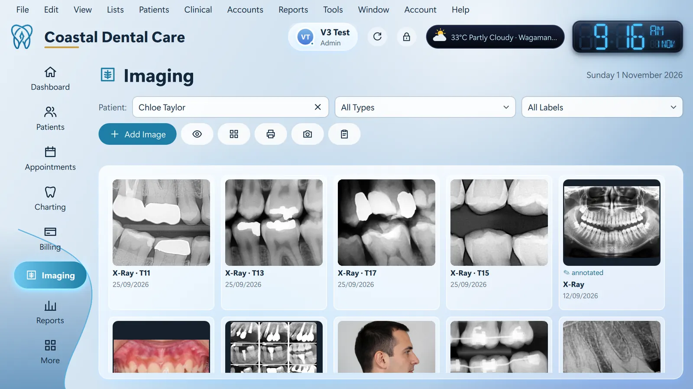
02 / 10 · Imaging & capture
Bitewings, periapicals and panoramics
Imaging
Every kind of radiograph the practice takes sits in the same gallery and opens in the same viewer, from a single periapical to a full panoramic.
- Bitewings of the back teeth, including patients in fixed appliances.
- Periapicals for a root, an apex or a single implant.
- Panoramics for the whole mouth at once, and panoramics made from a CBCT.
- Tag each image with its type and tooth so it's easy to find again.
Bitewings
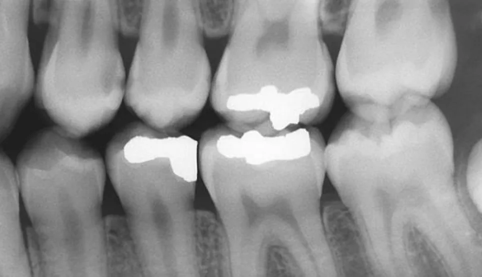
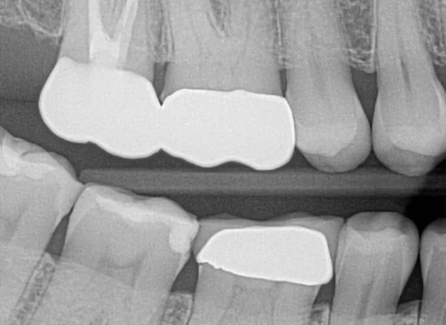
Periapical · Panoramic
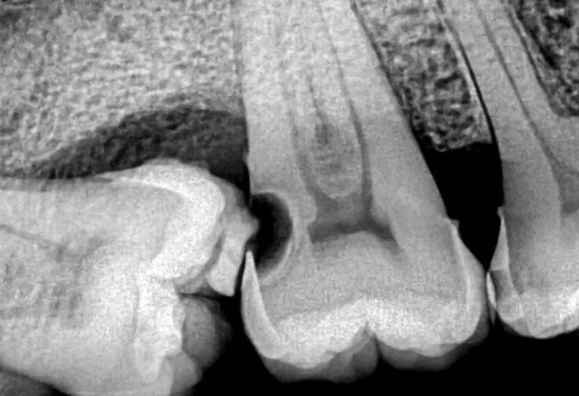

03 / 10 · Imaging & capture
Adding images and DICOM
Imaging → Add Image
Add an image file with its type, tooth, date and provider, or bring in a DICOM file from your sensor or scanner.
- DICOM files are recognised automatically and their header read: capture date, device and patient.
- If the patient's name in the file doesn't match the record, DentaCore asks.
- The original DICOM is always kept. DICOM Info shows its header and Export Original DICOM gives it back untouched.
- Set a default image type for what your practice shoots most.
- Move an image filed under the wrong patient, with an audit line.
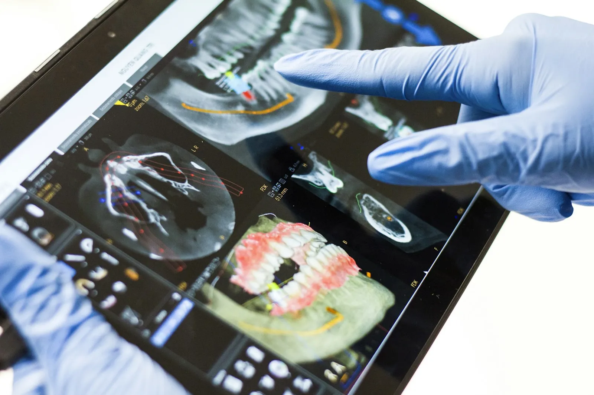
04 / 10 · Imaging & capture
The image viewer
Imaging → double-click a tile
A full-window viewer with the patient's other images down the side.
- Brightness, contrast, gamma, filters, sharpen and invert.
- Rotate by any angle to straighten, flip, crop and zoom, with a magnifier.
- Window and level on the original DICOM's full 12 to 16-bit values, colour tables, a histogram and the value under the pointer.
- Pen, text and ruler to mark a finding for a referral or to show the patient.
- Calibrate from a known length or the DICOM header to measure in millimetres.
- Save makes a new copy. The original is never changed.
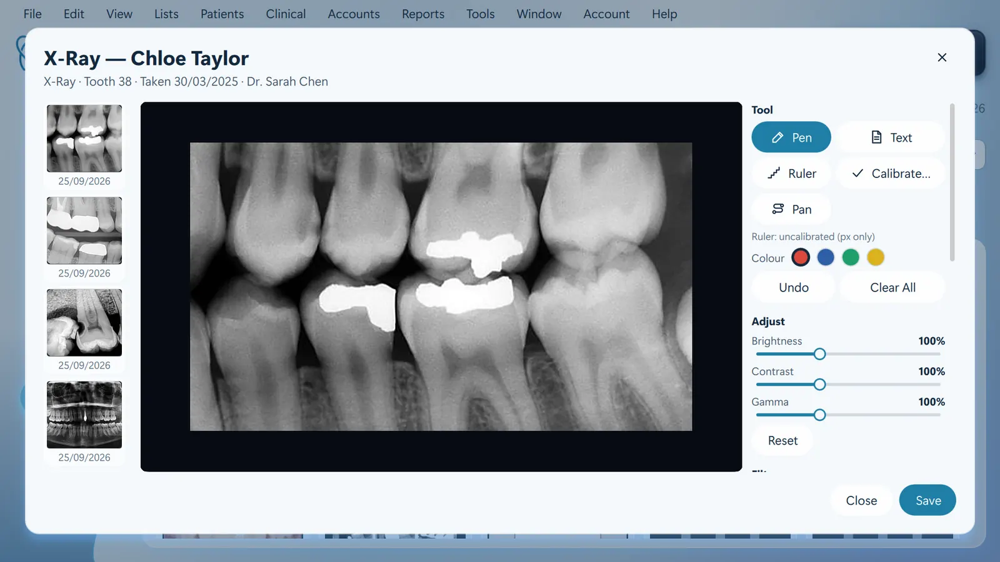
05 / 10 · Imaging & capture
Compare images side by side
Imaging → Compare
Put any two of the patient's images side by side, linked, to see what has changed.
- Pick each side from the patient's images.
- Zoom and pan both together.
- The classic use: this year's X-ray beside last year's.
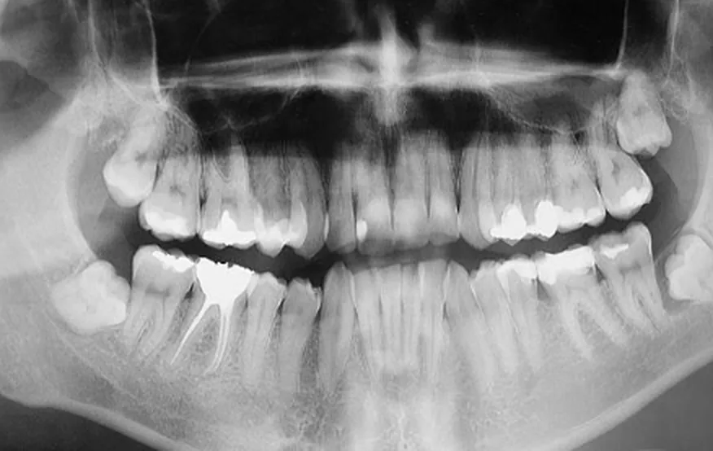
06 / 10 · Imaging & capture
Guided capture sequences
Imaging → Capture Sequence
Capture a full set one slot at a time, from bitewings and a panoramic to a full mouth series.
- Each slot asks for the right view and fills the moment the image arrives.
- Capture from a TWAIN sensor, camera or scanner, or import a file.
- Discard & Retake, Back and Skip as you go. Resume a sequence you stopped.
- A slot can flip its picture automatically for mirror shots: occlusal and buccal views the right way round.
- The Admin builds the practice's own layouts slot by slot.

07 / 10 · Imaging & capture
Capture timepoints
Settings → Features → Capture Timepoints
Mark where in treatment each set was taken, then compare like with like.
- Baseline, Initial Records, Progress, Pre-Debond, Final Records and Retention Review, or your own list.
- A badge on each image and a gallery filter by timepoint.
- Compare Timepoints puts each view of the earlier set beside the same view of the later one.
- Print the comparison as a study mount page.
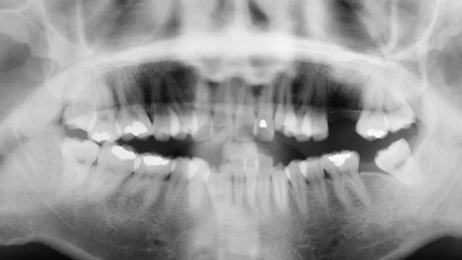
08 / 10 · Imaging & capture
The capture hot folder
Capture Sequence → Hot Folder
Point DentaCore at the folder your camera or sensor saves into, and pictures drop into the open sequence by themselves.
- Each computer has its own hot folder.
- A picture is taken once it has finished writing, and a burst fills the following slots in turn.
- Originals are moved into a dated _imported folder, never deleted.
- Undo Last Import puts a picture back and reopens its slot.
- RAW camera files are left alone with one notice to save a JPEG as well.
- Nothing is watched unless a sequence is open.
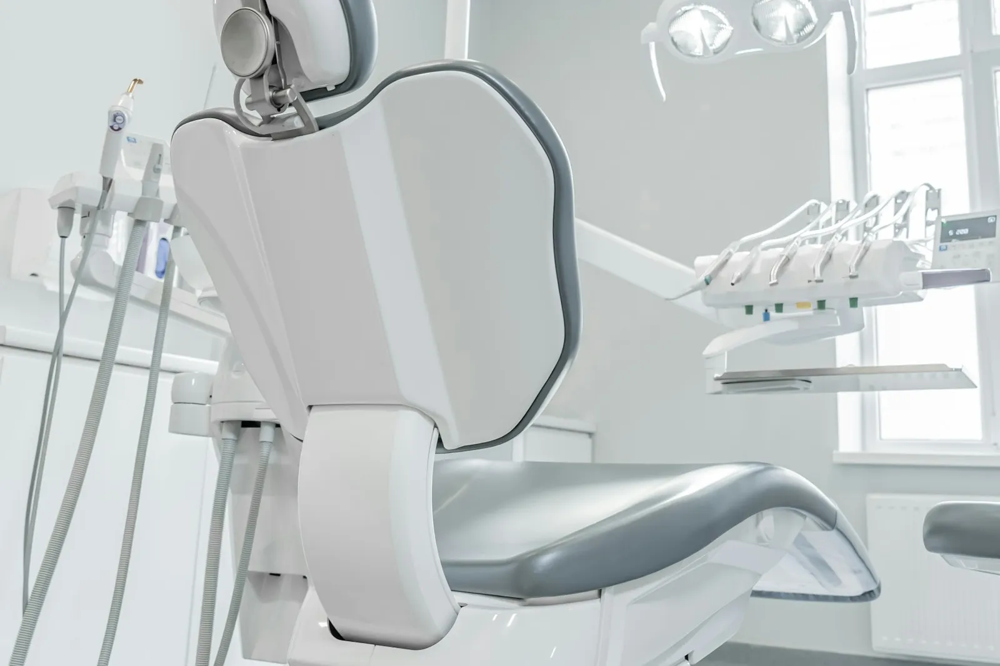
09 / 10 · Imaging & capture
Study mounts
Imaging → Study Mount
Arrange the patient's images into a mount template and print it.
- Templates with their own grid of slots, built by the Admin.
- Images are suggested for each slot by type.
- Preview the mount, then print it as a PDF.
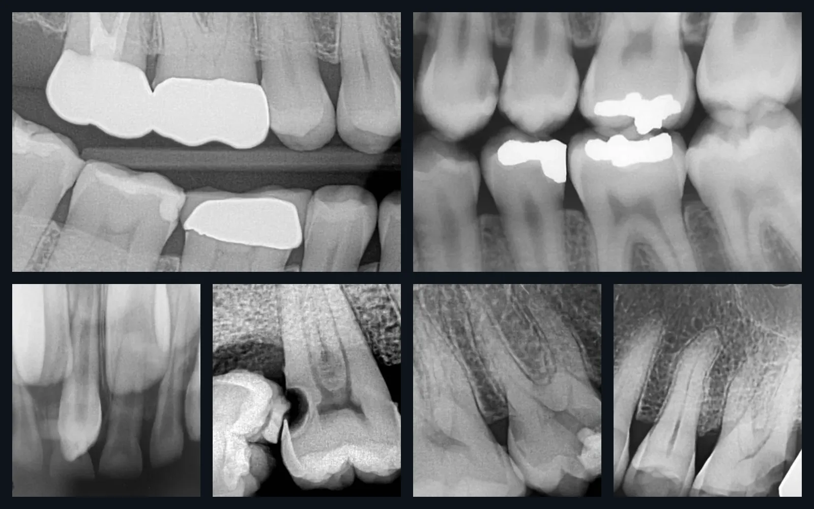
10 / 10 · Imaging & capture
PACS, TWAIN and devices
Settings → Imaging
Work with the equipment and systems the practice already has.
- TWAIN: capture straight from an intraoral sensor, camera or scanner on the chairside computer.
- PACS: send images to the practice's PACS, and search and retrieve studies from it, such as a CBCT taken by a specialist.
- Images are stored on the practice's own shared folder, never uploaded anywhere else.
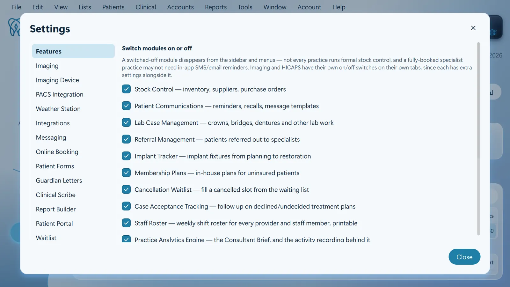